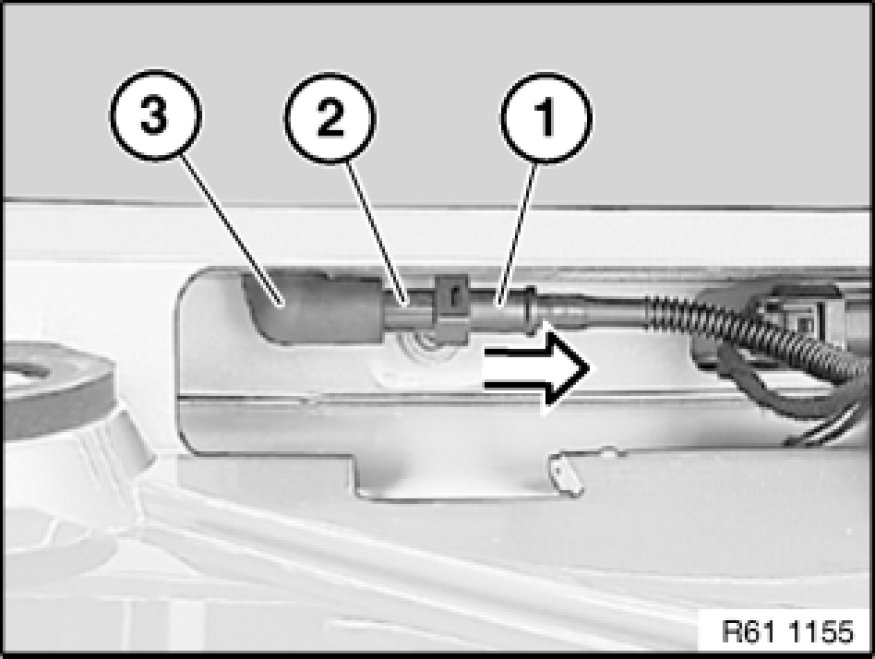

Windshield Washer Hose: Service and Repair
61 62 170 - Removing and installing/replacing non-return valve for rear window washer system

Necessary preliminary tasks:
- Remove rear spoiler 51 71 412 Removing and Installing Rear Spoiler.

Detach hose (1) in direction of arrow from non-return valve (2).
Pull non-return valve (2) out of spray nozzle holder (3) and remove.
Installation:
Make sure hose (1) and non-return valve (2) are correctly seated.